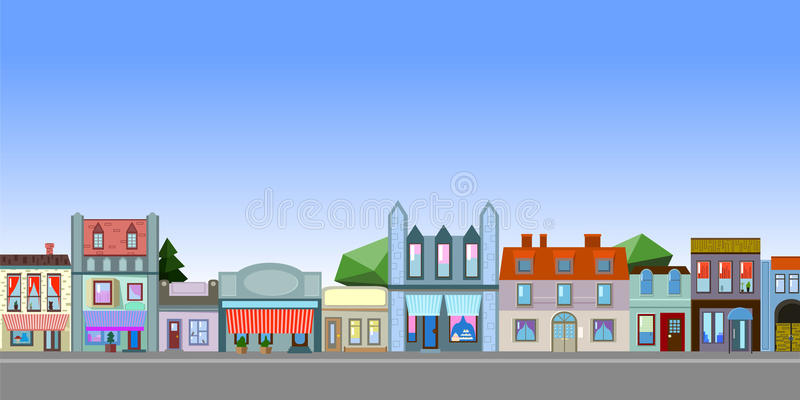
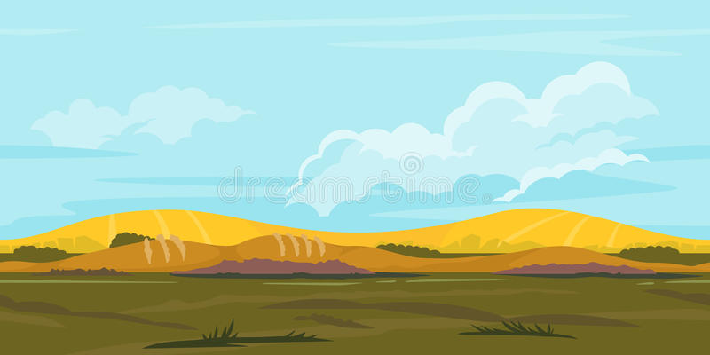
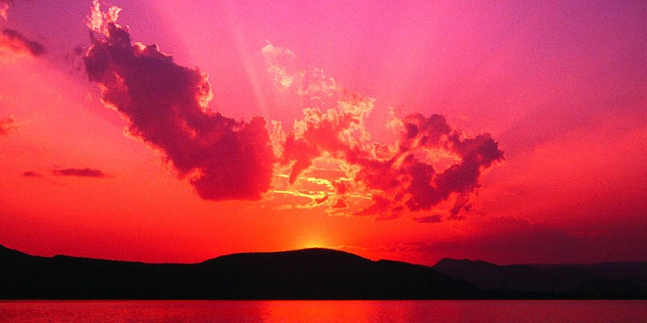
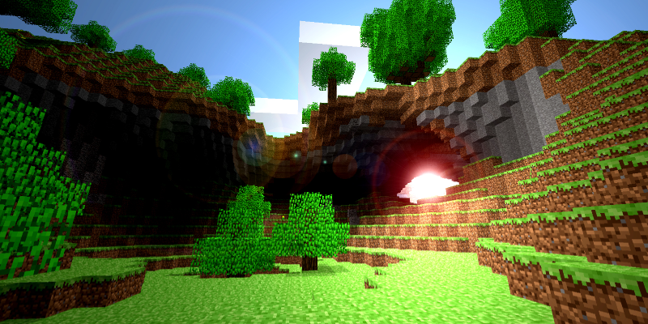

Para que se forme una playa debe haber ciertas condiciones que lo permitan. Primero debe existir un área geomórfica que permita la acumulación de sedimentos. Segundo, debe ser mayor la acumulación o acreción de sedimentos que la erosión, ya que si la segunda es mayor, no habrá una acumulación permanente. Recordemos que toda playa ha alcanzado naturalmente un cíclo entre la acreción y erosión. Sin embargo, si se insertan nuevas variables que afecten esta relación se puede sobrepasar el límite geomórfico de la playa y desencadenar una serie de eventos que pueden llevar a la pérdida de la playa.
Mi nombre es Jesús Arizmendi, soy un joven al que le gusta mucho viajar, conocer lugares turísticos de precio accesible para todas las personas, también soy el autor de este blog, el principal objetivo de este blog es dar a conocer diversos paisajes y lugares en los que se puede viajar. Me encantaría saber tu opinión sobre los mejores lugares que visitas